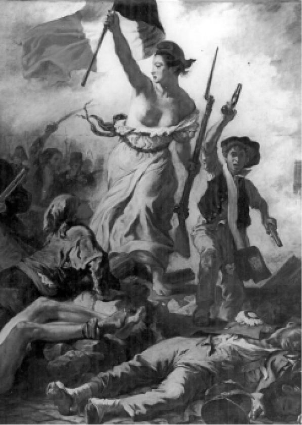

“民主”（democracy）一词有许多含义。如果说其中有哪个是本源的，那么柏拉图可能会说，事实上它被尘封在天上；不幸的是，还没有传达给我们。这个词正是某些哲学家所说的“本质上有争议的概念”，类似这样的词永远不会让所有人一致同意以相同的方式加以定义，因为定义本身就承载着不同的社会、道德和政治内容。不过，无论如何，至少在今天，我们的生活离不开它。四十年前我写下《为政治辩护》（In Defence of Politics）一书，在书中为这个“最混乱不堪的词”找了个化身，让它变成希腊或罗马神话中的仙女，即雅典的小神“民主”（Democratia）：“她是大众情人，即便哪个爱侣看到她的芳心正被其他人无理分享，也不减她的魔力。”
当然，柏拉图讨厌民主。对他来说，这种统治方式是在让意见（doxa）超越哲学（philosophia），让看法重于知识。希腊语中表示统治的词是Kratos，而demos意指“人民”，但是古代（以及现代）许多论者都赋予它一种贬义，把多数人简单地归为暴民，即强大、自私、变化无常、前后不一的兽类。我们会看到，柏拉图的学生亚里士多德在《政治学》一书中采取了比较温和的观点。对他来说，民主是善治的必要条件，但远不是充分条件。如果谈论正义和善治，我们就是在谈论由不同的概念、价值和做法构成的复杂集合，这种集合一直处于变化之中。比阿特丽斯·韦伯曾说：“民主并非谬见的叠加”；她这么说不是在否认民主，只是可能略有些尖刻地把民主放到了原本的位置，并要求在教育领域进行更多的改革，或者只是在呼唤教育。
所以，任何人如果主张存在某种无论何时都最为理想的民主概念，我们都应该存疑，对于我们如何选择穿戴某套现成的民主服装而不是另一套，则应该带一些嘲讽。不过，选择还是必需的，即使是以默认的方式。在民主国家，广泛存在的不作选择可能是一种危险的选择方式。每个人都必须选择一些东西，但是如何以及为何擅自替他人做出选择，则是另一回事。从广义上说，大多数生活在我们称之为“民主”的政府体系中的人，都可能会阅读类似眼前这样的一本书。如希腊诗人所说的，“民主”这个词仍然能够，或者说应该“像酒一样温暖血液”，而“立宪政体”之类的则有一点关于民主的教科书或法律书籍的意味。尽管颇多歧义，还是很有必要探讨“民主”，探讨它的使用和滥用，正如本书的结尾部分将要详述的那样。在新的政制确立之际，要在不同的民主制度之间进行选择，比如在战后的德国和日本，在苏联解体后新诞生的那些共和国，或者在苏格兰、威尔士和北爱尔兰这样的权力由移交而来的政府中。但是，这并不意味着民主在任何情况下都是压倒一切的原则（更不用说令人难过的事实是，世界上大多数国家并没有民主）。例如，在过去的一两年中，我碰巧参加过很多会议，会上有人站起来，充满激情又合乎逻辑地要求创建“民主学校”，我则毫不留情地反击：“胡说八道，学校不可能是民主的；但是上帝为证，有许多国家需要变得更加民主，某些国家事实上是专制政体极为明显的例证。”
不过从广义上讲，“民主”的不同用法中具有实际效用的并没有那么多。所谓具有实际效用，意思是在民主被视为一套价值观念和被视为一套制度安排之间存在某种一致性。同时考察被称为民主的价值观和制度的历史，就能无比清晰地看出这一点。
之所以在一开始采取历史方法，有两个原因。第一个原因，要理解任何人类制度，必须先对此前发生的事有所了解，了解为何要创建它们，它们又是如何演变的。即使是崇尚革命的马克思也说过，为了改造世界，必须先认识世界（即便他对于改造可能达到的程度，当然也包括所涉及的时间尺度，有些理想主义甚至是明显错误的）。第二个原因本身就是历史的。当民主先是与美国革命，随后又与法国革命一起进入现代政治和社会时，这些事件的领导人回顾了在他们看来堪称先例的希腊民主和罗马民主。在绘画和雕塑中，他们身穿古典时代的托加袍，戴着桂冠；在确立深思熟虑的原则、撰写反对皇室政府和压迫的小册子时，他们用的是希腊和罗马的笔名（既是在发出挑衅又是为了自我保护）。所采用的特定笔名告诉了读者他们的立场：“布鲁图斯”可能会比怀着立宪思想的“西塞罗”更赞成采取直接行动。数个世纪以来，关于希腊城邦（公民国家）与共和时代的罗马的记忆，一直萦绕在西方人的脑海中，对一些人来说是真正的恐惧，对其他人则是不确定的希望。以往做过的事，可以再做一次。总是有必要记住的是，我们正在考察的这个词，在大部分人类历史上的大多数社会中都没有任何意义；现代世界的多数政府都认为有必要自封为民主，其中有许多却触及或越过了历史上这个词所有主要用法的外限。

图1 德拉克洛瓦的《自由引导人民》
我乐于接受写作本书带来的挑战，毕竟简短地书写，并且尽量简化而不扭曲一个无比重要又极为复杂的主题，要比长篇大论更为艰难。因此，这里要作一个双重提醒。在正文中，三个不同的故事（或叙述）不得不齐头并进，我会在最后小心地加以理顺，并让它们彼此关联起来。民主可以是政制的原则或学说；民主可以作为一套制度安排或宪政手段；民主也可以作为一种行为类型（比如说，既与惯于服从又与不善交游相对）。它们并不总是一起出现。例如，票选领导人是一种民主手段；但是在高度专制的教会中，许多中世纪的修士选举出了本修道院院长。如果酋长在战役中死亡，维京人的战团将选出新的首领，而霍拉肖告诉我们，哈姆雷特临终前想投票支持福丁布拉斯当丹麦的国王（“不是我们在英格兰怎么做”，而是伊丽莎白时代的听众显然听说过选举君主制这样的怪事——不需要节目说明或喜剧歌队来告诉他们）。第二个提醒是，直到最近，民主含义的历史一直与“共和国”以及“共和国的”含义难分难解。
罗马共和主义传统在16世纪和17世纪得到了复兴（马基雅维里在《李维史论》中大力倡导并详细剖析），并且在美国革命和法国革命中成为鼓舞人心的观念。按大多数人对民主的理解，这种传统并不“民主”，因为它坚决否认每个人都适合投票，并给出了一些很好的理由；但从某些意义上来说，它比今天的许多人能够坦然接受的都要民主，因为它强调所有公民都有义务积极参与公共生活和国家事务（学者们称之为“公民共和主义”）。今天，我们倾向于认为，只要愿意我们都有权利这样做，如果不愿意，偶尔也可以不这样做，国家会提供法律来保护我们的个人自由（学者们称之为“自由主义”）。但是，正如我们将会看到的，把这种“下滑”（或者说是一种广泛的信心，即我们可以把这一切全部交给别人）仅仅归因于20世纪后期的消费社会，即撒切尔主义，或者归因于对市场经济的奉若神明是错误的。其根源要更为深入，关系到“民主”和“自由”两词及其相关实践的含混之处的本质。邦雅曼·贡斯当于1819年在《古代人的自由与现代人的自由》一文中写道：
这种矛盾以现代外衣修饰后便是我的结论，不过我还是希望有一个足够欢喜的结局，让我们两种自由都能享受到，但前提是我们必须研究两种自由作为独立的实体如何能够共存，而不是融合——经由花言巧语融合，从而危险地混为一谈。